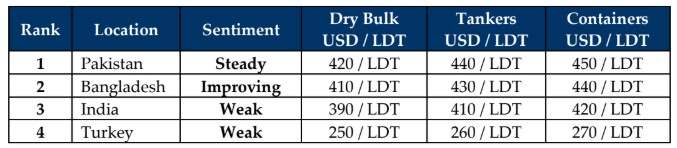

inWeekly Demolition Reports13/10/2025

In ship recycling, where even a day can make an incredible difference (the summer of circa 2006 when India lost about USD 100/Ton overnightdue to a collapse in steel prices, for example), a week can certainly make a dramatic difference especially given the turbulent nature of current times that global markets are enduring. Not only did the international markets ride through a rude awakening as a series of events and another proposed Peace Agreement in the Middle East between Hamas and Israel via the release of the all the hostages on the one hand, was met with the heads of states of Pakistan and the Taliban regime in Afghanistan pick up Russia’s old bad habits in Ukraine as all nations reportedly engaged in aggressions pursuant to a collapse in prior peace talks.
This will certainly affect the future of shipping / trade in the region and in turn, feed through to the global ship recycling markets via incoming tonnage, as change certainly seems as though it’s in the air this week.
Going through the checklist of key economic factors affecting the state of global ship recycling today, while the world awaits inflation reports from India and the U.S. (where the government is currently shut down), the Baltic Exchange Dry Index reported a marginal increase as it climbed a mere 13 points by close of Friday on the back of Capesize & Panamax indices both reporting a 13 and 34 point bump in their values, as the small vessel index fell to its lowest level since late August, resulting in the overall index still reporting a near 2% climb this week. Moreover, despite the rising trade rates, oil continues to take a hammering closing at a lowly USD 59.81 / barrel, a number that today stands 18% lower than the same time last year.
And tonnage, it sure seems as though it’s coming given this week’s result as both Indian and Bangladeshi waterfronts suddenly saw tonnage emerge at their respective anchorage horizons this week, especially in India – the nation most brutally hit by Trump’s cluelessness over failing of Reagan-era policies of “strength through peace”, where a 2025 rich man only knows how to dictate terms and temperament. Eroding fundamentals in the form of declining steel plate prices and fluctuating FTX values across the ship recycling board continue to see weekly disagreements as levels in some locations continue to devolve without end, while others display false hopes via marginal weekly improvements that disappear in subsequent ones. Turkey at the far end remains fashionably late with no progress in volumes, other than the occasional private fixture making the rounds. As week 41 of 2025 / week 2 of October passes, a spook and a whoa later, the market remains just as devolved and unpredictable as ever, with India still holding the lowest placed highest value market to go to.
For Week 41 of 2025, GMS Market Rankings / vessel indications are as below.

📄 Download PDF: Ship-recycling-market-insight-Week-41-10-10-2025-Whoananza.pdfSource: GMS,Inc.https://www.gmsinc.net/gms_new/index.php/web